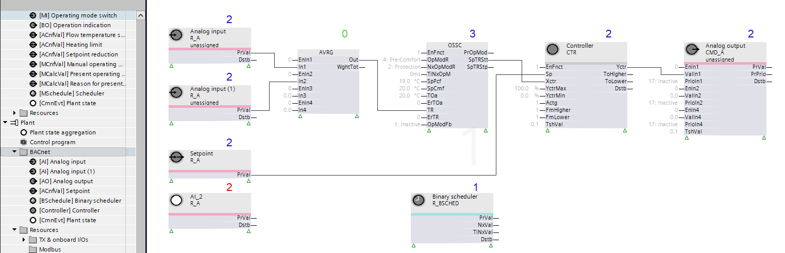
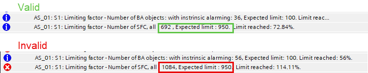

Showing data point limits when compiling
The compile function calculates the limiting factors with the following results:
Information: % of limit reached.
 Warning: 90% limit reached. Several warnings together may cause significant performance problems. Reduce load factor as possible.
Warning: 90% limit reached. Several warnings together may cause significant performance problems. Reduce load factor as possible.
Error: 100% limit exceeded. Compile has failed. Downloading is not possible.

For more information on the hardware and software limits, see document A6V13054435, PXC4, PXC5 & PXC7 Planning overview.
Calculation of the system function calls (SFC)
In the control program, a system function call is a communication channel between an FB and a BACnet object. If an FB is used in the control program, a corresponding resources are reserved for the communication channel and represented as SFC. It is also decisive for the SFC calculation whether the FB only reads, only writes or reads and writes the BACnet object and can result in 1,2 or 3 SFCs. If an FB for exchanging data with BACnet objects (xFB) is not linked to a BACnet object, this FB will also be included in the SFC calculation.

The calculation of the SFC is not a 100% 1:1 relationship between FB and BACnet objects, but the effective use in the control program is taken into account for the calculation. In most cases, the number of SFCs used is greater than the number of BACnet objects.
Example
An analog input BACnet object that is connected to an FB R_A requires two communication channels. One for reading and one for writing (for example, for suppress event notification or suppress event detection). In this example, the count of the required SFCs is 16.

Name | Description | Channels calculated | Option to reduce channels (1) |
R_A | Analog input | 2 | - |
R_A | Analog input | 2 | - |
R_A | Setpoint | 2 | - |
R_A | AI_2 | 2 | 2 |
OSSC | OSSC | 3 | - |
R_BSCHED | Scheduler | 1 | - |
CTR | Controller | 1 | - |
CMD_A | Analog output | 2 | - |
Total | 16 |
| |
(1) If the SFC limit is reached, unused FBs must be deleted from the control program. Note: Each unused FB also has an influence on the cycle time in the device.
Table
Open the attached FB mapping file to get detailed information on each block.
Error message
If too many SFCs are used in the control program, an error message is displayed during compilation. The control program cannot be loaded into the device.
